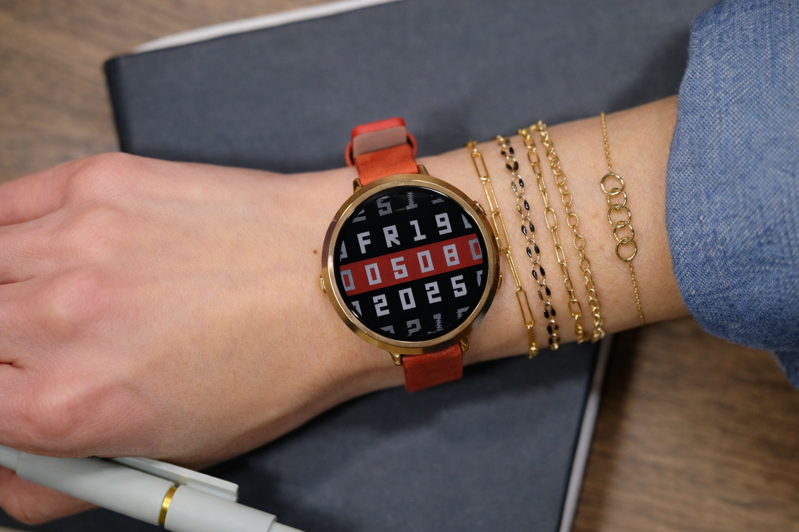

Pebble Round 2: volver a lo esencial también es avanzar
Pebble vuelve a hacerlo a su manera. La nueva Pebble Round 2 recupera el diseño redondo y ultradelgado que marcó época en 2015, pero lo actualiza con la tecnología justa: una pantalla e-paper a color más grande y nítida, hasta 14 días de batería y un precio que hoy suena casi provocador: 199 dólares.
No hay sensor de ritmo cardíaco ni promesas de ser un reloj deportivo. Y ese es el punto. Pebble apuesta por un smartwatch que prioriza la experiencia diaria: notificaciones claras, control por botones que puedes usar sin mirar la muñeca, seguimiento básico de pasos y sueño, y una batería que no te obliga a vivir pendiente del cargador.
El reloj mide apenas 8.1 mm de grosor, monta una pantalla 1.3” (260×260) con retroiluminación, micrófonos dobles para dictado y respuestas por voz, y corre sobre Pebble OS en código abierto, lo que le da acceso a miles de apps y carátulas, además de nuevas integraciones con asistentes de IA.
Un breve recordatorio necesario
Pebble no “regresó” por nostalgia. Volvió porque Google liberó el código del sistema, permitiendo que la comunidad y el propio Eric Migicovsky retomaran el proyecto bajo una nueva etapa. Desde entonces, Pebble avanza con pasos pequeños pero firmes: hardware sencillo, software abierto y una comunidad que nunca se fue. Hoy el ecosistema está vivo, se actualiza, y ya incluso experimenta con IA en otros dispositivos como su anillo inteligente, funciones que llegarán más adelante a los relojes.
La Pebble Round 2 entra en preventa el 2 de enero y se espera que llegue en mayo. No intenta competir con Apple o Samsung. Compite contra el cansancio de relojes cada vez más complejos.
Y quizá ahí está su mayor acierto: recordarnos que a veces, hacer menos… es hacerlo mejor.